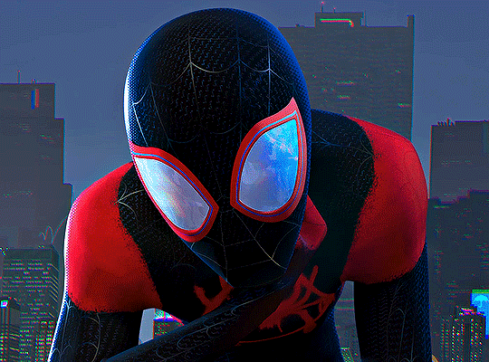
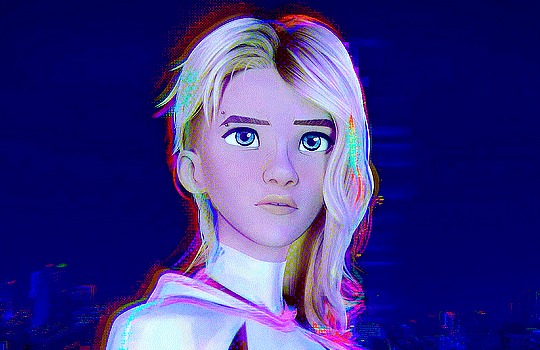
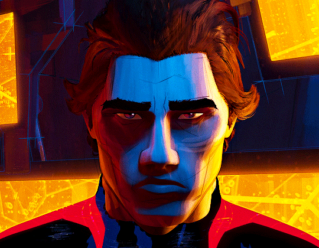
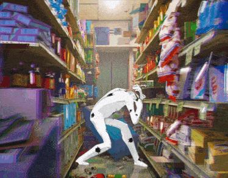

Vive na Terra-1610 e é o Homem-Aranha da sua dimensão.
Protagonista do longa

Vive na Terra-65 e é a Mulher-Aranha da sua dimensão.
Melhor amiga de Miles.

Vivia na Terra-928 e era o Homem-Aranha da sua dimensão.
Principal antagonista do longa.

O Mancha surgiu a partir da explosão do acelerador de particulas da alchemax.
É o Vilão principal do longa